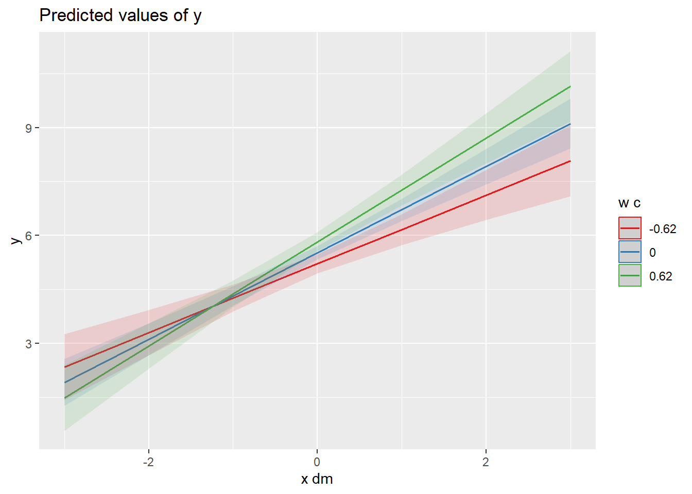

Erwarten wir, dass der Effekt von täglichen Schwankungen in X auf Y abhängig von einer Variable ist, die auf Level-2 gemessen wird (z.B. relativ stabile Persönlichkeitsmerkmale), können wir dies mit einer Cross-Level Interaktion testen.
head(df_example1c)
id
w
y
m
x
y_dm
m_dm
x_dm
y_gm
m_gm
x_gm
1
3.847053
4.064028
8.492899
4.136489
-1.1414789
1.4106789
0.803986
5.205507
7.08222
3.332503
1
3.847053
3.599397
9.073630
3.728720
-1.6061099
1.9914099
0.396217
5.205507
7.08222
3.332503
1
3.847053
7.704277
4.082619
2.638451
2.4987701
-2.9996011
-0.694052
5.205507
7.08222
3.332503
1
3.847053
6.796018
5.516980
2.761167
1.5905111
-1.5652401
-0.571336
5.205507
7.08222
3.332503
1
3.847053
4.723777
6.875090
3.152261
-0.4817299
-0.2071301
-0.180242
5.205507
7.08222
3.332503
1
3.847053
3.592594
9.817786
4.168687
-1.6129129
2.7355659
0.836184
5.205507
7.08222
3.332503
Wir zentrieren den Moderator “w” auf dem Grand mean (Gesamtmittelwert) für eine einfachere Interpretation der Modellparameter.
Beachtet, dass mit der eingebauten Interaktion die Haupteffekte nicht mehr interpretiert werden.
5.1.1 Visualisierung
Visualisierung des Interaktionseffekt mittels der plot_model() Funktion. Standardmässig werden die Simple Slopes an den Extremwerten (Minimum, Maximum) des Moderators geschätzt.
plot_model(ri.rs_cli_modell, type ="int", terms =c("x_dm", "w_c"))
ggsave("test.png")
Saving 7 x 5 in image
Alternativ kann man auch die Werte zum Mittelwerte und bei -1 SD und +1 SD des Moderators anzeigen lassen.
plot_model(ri.rs_cli_modell, type ="int", mdrt.values ="meansd")

Der Plot zeigt, dass bei höheren Ausprägungen von w der Effekt von x_dm stärker ausfällt.
5.1.2 Simple Slopes Analyse
Mit Hilfe der simple_slopes Funktion aus dem reghelper Paket können wir uns die Regressionskoeffizienten einer Simple-Slope Analyse unterziehen. Die Simple-Slope-Analyse in Mehrebenen-Modellen dient dazu, den Moderationseffekt einer Variablen zu untersuchen, indem die Beziehung zwischen Prädiktor (hier: “x”) und abhängiger Variable (hier: “y”) auf verschiedenen Ausprägungsniveaus der Moderatorvariablen (hier: “w_c”) betrachtet wird. Nach der Schätzung des Mehrebenen-Modells werden die Steigungen (Slopes) für unterschiedliche Werte des Moderators berechnet (z. B. ±1 Standardabweichung oder spezifische Werte), um zu analysieren, ob und wie sich der Effekt des Prädiktors je nach Moderator ändert. Diese Methode hilft zu verstehen, ob die Stärke oder Richtung eines Effekts in Abhängigkeit der Moderatorvariable variiert.
Wir können die spezifischen Werte der Variable automatisch bestimmen (1. Variante) oder manuell setzen (2. Variante). Uns interessieren die Werte, wenn x_dm um eine Einheit steigt und der Moderator unterdurchschnittlich (-1 SD), durchschnittlich, oder überdurchschnittlich (+1 SD) ist. Entsprechend werden die Werte in Variante 2 manuell gesetzt. Die Werte können wir der Abbildung oben entnehmen.
Die Simple Slope Analyse bestätigt die Visualiserung und zeigt, dass der Effekt von x_dm auf y schwächer ausfällt, aber immer noch signifikant positiv ist, wenn der Moderator w_c unterdurchschnittlich ist (Variante 1, Zeile 4, Variante 2, Zeile 2). Der Effekt fällt stärker aus, wenn der Moderator w_c überdurchschnittlich ist (Variante 1, Zeile 6, Variante 2, Zeile 4).
5.1.3 Within-level Interaktion
Analog zur Cross-level Interaktion gibt es auch Within-level Interaktionen, bei der die Level-1 Anteile von Prädiktorvariablen miteinander interagieren.
plot_model(ri.rs_wli_modell, type ="int", mdrt.values ="meansd")
Der Interaktionseffekt ist nicht signifikant. Dies bedeutet, wie der Plot zeigt, dass die Linien bei allen Ausprägungen des Moderators mehr oder wenig parallel sind.
5.2 Übung
Wir arbeiten in der Übung mit einem neuen Datensatz.
Mache dich mit ihm vertraut. Diesmal benutzen wir einen Datensatz in dem die Variablen “labelled” sind, also Beschriftungen haben. Wir können die Labels mit get_label() abrufen.
Berechne Modelle mit denen du die folgenden Hypothesen testest:
H1: Illegitime Aufgaben hängen positiv mit negativem Affekt zusammen. H2: Der positive Zusammenhang von illegitime Aufgaben mit negativem Affekt fällt schwächer aus, wenn Unterstützung von Kolleg:innen hoch ausgeprägt ist.
Gehe Schritt für Schritt vor und teste erst in einem Modell H1, dann in einem anderen Modell H2. Urteile, ob die Hypothesen angenommen oder verworfen werden sollten.
Lösung
ri.rs_modell <-lmer(negativ ~ illtask_dm + support + (1+ illtask_dm | id), data = df_example_cli)parameters(ri.rs_modell)
Parameter
Coefficient
SE
CI
CI_low
CI_high
t
df_error
p
Effects
Group
(Intercept)
3.4515583
0.3038234
0.95
2.8551451
4.0479715
11.360409
776
0.0000000
fixed
illtask_dm
0.3256395
0.0513930
0.95
0.2247537
0.4265253
6.336261
776
0.0000000
fixed
support
-0.2468958
0.1012860
0.95
-0.4457228
-0.0480687
-2.437610
776
0.0150083
fixed
SD (Intercept)
0.6661075
NA
0.95
NA
NA
NA
NA
NA
random
id
SD (illtask_dm)
0.3534636
NA
0.95
NA
NA
NA
NA
NA
random
id
Cor (Intercept~illtask_dm)
0.6940618
NA
0.95
NA
NA
NA
NA
NA
random
id
SD (Observations)
0.6775572
NA
0.95
NA
NA
NA
NA
NA
random
Residual
Der Zusammenhang von täglichen illegitimen Aufgaben (illtask_dm) mit negativem Affekt (negativ) ist signifikant (b = 0.33, p < .001), was Hypothese 1 unterstützt.
Der Interaktionseffekt von täglichen illegitimen AUfgaben mit sozialer Unterstützung durch Kolleg:innen auf negativen Affekt ist nicht signifikant (b = -0.01, p = .89). Hypothese 2 muss somit verworfen werden.
5.3 1-1-1 Mediation
Im Folgenden erstellen wir ein Mediationsmodellen und spezifizieren bei den Argumenten x, y, und m die die unabhängige, abhängige, und mediierende Variable. Für die abhängige Variablen wählen wir die Rohvariable, für unabhängige und mediierende Variablen die personen-zentrierten Variablen.
Die 1-1-1 Mediation ist die gängigste Variante, in der alle Variablen (X, M[ediator], und Y) auf Tagesebene gemessen werden.
Zum Testen verwenden wir zunächst die Funktion modmed.mlm(). Anders als bei den früheren ANalysen steht uns das parameters Paket hier nicht zur Verfügung um die Ergebnisse zusammenzufassen. Stattdessen nehmen wir die summary() Funktion.
Linear mixed-effects model fit by REML
Data: tmp
AIC BIC logLik
4255.191 4299.979 -2119.596
Random effects:
Formula: ~0 + Sy | L2id
Sy Residual
StdDev: 0.8445188 0.6973181
Variance function:
Structure: Different standard deviations per stratum
Formula: ~1 | Sm
Parameter estimates:
0 1
1.0000000 0.8655498
Fixed effects: as.formula(fixed.formula)
Value Std.Error DF t-value p-value
Sm 0.000000 0.01908636 1896 0.00000 1e+00
Sy 5.367553 0.08728329 1896 61.49577 0e+00
SmX 0.514122 0.02887261 1896 17.80656 0e+00
SyX 0.139023 0.03829162 1896 3.63064 3e-04
SyM 0.583714 0.03657147 1896 15.96090 0e+00
Correlation:
Sm Sy SmX SyX
Sy 0.000
SmX 0.000 0.000
SyX 0.000 0.000 0.000
SyM 0.000 0.000 0.000 -0.491
Standardized Within-Group Residuals:
Min Q1 Med Q3 Max
-5.950445926 -0.596749015 -0.007671515 0.623219431 4.479879774
Number of Observations: 2000
Number of Groups: 100
Die ausgegebenen Zeilen/Parameter sind etwas kryptisch beschrieben.
Sm - fixed Intercept von M
Sy - fixed Intercept von Y
SmX - fixed Slope von X auf M (a-Pfad)
SyX - fixed Slope von Y auf X (c’-Pfad)
SyM - fixed Slope von Y auf M (b-Pfad)
5.3.2 Bootstrapped Version
Der indirekte Effekt von X auf Y via M (a-Pfad * b-Pfad) der uns in der Mediation von zentralem Interesse ist, ist in der Regel nicht normalverteilt, da ein Produkt zweier (oder mehrerer) Pfadkoeffizienten nicht wie die Pfadkoeffizienten selber approximativ normalverteilt ist. Aufgrund der fehlenden Normalverteilung verwenden wir die Bootstrap-Schätzung, um eine robustere Aussage über die Signifikanz des indirekten Effekts zu bekommen.
Warning: There was 1 warning in `mutate()`.
ℹ In argument: `across(where(is.numeric), round, 3)`.
Caused by warning:
! The `...` argument of `across()` is deprecated as of dplyr 1.1.0.
Supply arguments directly to `.fns` through an anonymous function instead.
# Previously
across(a:b, mean, na.rm = TRUE)
# Now
across(a:b, \(x) mean(x, na.rm = TRUE))
Der indirekte Effekt und sein 95% Konfidenzintervall müssen wir aus den Daten extrahieren. Wenn der 95% Konfidenzintervall die 0 ausschliesst (also sowohl unterer als auch oberes Limit entweder unter Null oder über Null liegen) können wir den indirekten Effekt als signifikant ansehen.
In diesem Beispiel finden wir also einen signifikanten indirekten Effekt mit Koeffizient = 0.30, 95% CI = [0.19, 0.41].
LLCI = Lower Limit of Confidence Interval
ULCI = Upper Limit of Confidence Interval
5.4 Übung
Wir arbeiten in der Übung mit einem neuen Datensatz.
Mache dich mit ihm vertraut. Wie in der Cross-Level Interaktionsübung benutzen wir einen Datensatz in dem die Variablen “labelled” sind, also Beschriftungen haben. Wir können die Labels mit get_label() abrufen.
Berechne Modelle mit denen du die folgenden Hypothesen testest:
H1: Tägliche Wertschätzung durch Vorgesetzte und Kolleg:innen hängen positiv mit dem täglichen Selbstwert zusammen. H2: Täglicher Selbstwert hängt positiv mit täglichem proaktivem Helfen zusammen. H3: Es gibt einen positiven indirekten Zusammenhang zwischen täglicher Wertschätzung und täglichem proaktiven Helfen, vermittel durch den täglichen Selbstwert.
Teste die Hypothesen in einem Modell mittels der boot.modmed.mlm.custom() Funktion. Urteile, ob die Hypothesen angenommen oder verworfen werden sollten.
H1 wird unterstützt (SmX: b = 0.40, p < .001). H2 wird verworfen (SyM: b = 0.14, p < .40). H3: wird entsprechend auch verworfen (95% CI des indirekten Effekt schliesst die 0 ein). Es besteht aber ein direkter Zusammenhang zwischen X und Y (SyX: b = 0.33, p < .001), der, anders als angenommen, nicht indirekt über Selbstwert vermittelt wird.